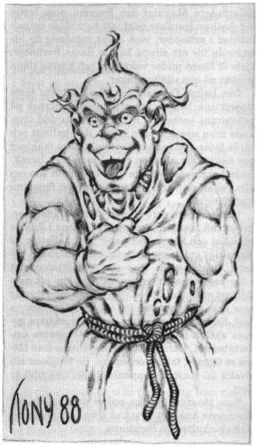

10. Trakorisk religion
”Min Gud är en makt. Han låter sig bara förutses eller påverkas av egen vilja” Bonselmius den fromme.
Villkor: FV Kulturkännedom eller en lämplig kontakt med religionen ifråga. De flesta trakoriska krigare har ett hum om Trocuspa och banzikan.
Gudagåvor: Detta begrepp förklaras i Gigant. I princip är det särskilda egenskaper som guden ger till enstaka hängivna dyrkare. Guden Remuntras gåvor drabbar alla berörda.
Trakorien har aldrig dominerats av en enda religion. Av den anledningen accepterar man de flesta läror. Ofta ser man den egna guden som medlem av ett större panteon bland idel respektabla, löjliga, barbariska eller bara mindre mäktiga kollegor.
Det stora teologiska käbblet i Trakorien handlar om huruvida världen finns eller bara är en illusion.
Alla religioner med självaktning har förstås sina speciella präster och riter, men vissa titlar från den urgamla laabniska kulturen lever allmänt kvar.
Allmänkyrkliga titlar
Enu — Andlig överstepräst
Urigallu — Tempelföreståndare. Administrativ kyrklig ledare.
Erîb biti — Högre tempelpräst med tillträde till det allra heligaste.
Kmeh’ dulluh — Präst som leder templets officiella riter.
Mashmashu — Sångare och recitatör av de heliga skrifterna. Ofta en kastrat.
Pashishu — Tempeltjänare som rengör och betjänar gudabilderna.
Kalû — Speciell präst som officierar vid sorgehögtider.
Ashipu — Helig andeutdrivare
Barû — Kyrklig drömtydare och astrolog. (Även profana astrologer brukar kalla sig barû eftersom titeln ger visst anseende)
Naditu, naditsh — Kvinnlig respektive manlig kurtisan som tjänstgör i de heliga kärlekshusen till gudarnas ära. Kvinnliga tempelkurtisaner kallas också hieroduler.
Trakoriens vanligaste gudar och läror
1. Arketypiska gudar
Arketypiska gudar är standardgudar som förekommer i de flesta kulturer, men under olika namn. Till exempel hittar man nästan överallt en skördegud, en himmelsgud, en dödsgud etc.
På öarna har de arketypiska gudarna ärvts från kejsardömet Jorpagna och spritt sig via den laabniska och därefter den klavykiska kulturen till dagens trakorier. Dessa gudar är okontroversiella och kan tillbes öppet överallt jämsides med mer speciella gudar. Man dyrkar på varje plats någon gud som har stort inflytande över områdets basnäringar, och lägger ofta till några lokala gudar.
Arketypiska gudar har beskrivits i flera andra moduler. Rollpersoner kan mycket väl dyrka tex ”de unga gudarna” från Kandra även i Trakorien. Här beskrivs kortfattat några av de vanligaste bruksgudarna i regionen.
Enki — sötvattnets herre
Enki låter sötvattnet skänka jorden dess fruktbarhet och liv. Från sin boning i det bottenlösa Abzû, en omätlig underjordisk sjö, låter han vishetens fruktbara och stilla vatten rinna som en klar flod in i människorna. Enki är också ålderdomens och traditionens beskyddare. Han vakar över allt gott kunnande.
Tempel: Huvudtempel i Frimbole Olvi. De större templen finns i Tricilve, Favoki (något bedagat), Soblak, Privavi, Zaroflas och Melse.
Anxalis — Havsdjupens drottning
Gudinnan Anxalis är havens nyckfulla gudinna och kanske den mest krusade bruksgudinnan av alla. I varje kustsamhälle finns kapell nära hamnen där fiskare eller deras hustrur kan be eller offra till Anxalis. Ofta fungerar byns lärare eller ålderman som lekmannapräst.
Munkar av Ambaquaorden utgör gudinnans vigda tjänare och reser ständigt mellan öarna. De får vanligen fri färd på alla skepp och tas väl emot på kusten, men förväntas också välsigna ortens farkoster och fiskeredskap vilket kan ta avsevärd tid.
Tempel: Ambaquaorden leds från templet i Soblak. Fasta tempel finns även i Tigôld, Frimbole Olvi, Fam Kvalvi, Okruzande och Karnald.
Möjliga gudagåvor: Förmågan att stilla oväder till havs. Förmågan att öka fiskfångst med 10-50%. Förmågan att gå på vatten.
Övriga bruksgudar
Bland andra bruksgudar kan nämnas:
Tiamat
Tiamat är mer ett begrepp än en gud. Ordet betecknar närmast det urtillstånd av kaos ur vilket världens ordning uppstått. I skapelseberättelser ges Tiamat ofta formen av en jättekvinna eller ett vidunder, som skaparguden besegrar. Av kroppen skapas sedan världen.
Marduk — stormarnas och vädrets herre
Han har, liksom Anxalis, stort inflytande över sjöfarten, men kan också låta slagregnet drabba bondens skörd.
Ezgela — Skyarnas gudinna
Hon låter luften bära de vingade varelserna.
Luvena — Mångudinnan
Hon framställs ofta som sjukdomens och den smygande dödens gudinna, varför denna himlakropp har oförtjänt dåligt rykte i Trakorien. (Det bättras knappast upp av varulvar och annat elände). Luvena fruktas och blidkas, men dyrkas knappast öppet av vanligt folk. Däremot finns framför allt på Palamux ett antal hemliga måndyrkarsekter förknippade med nekromanti, människooffer och kannibalism. Dessa kommer säkert att höras av i kommande berättelser, men beskrivs inte närmare i denna modul.
Ereshkigal — Dödsrikets gudinna
Ereshkigal uppfattas inte som ond, utan snarare som det stränga ödets väktare, hon som vänder sitt timglas varje gång en människa föds. Ereshkigal är sannolikt en förenklad och mer begriplig bild av Tiamat.
Valliman och Drigel
Två gudabröder som bär solen över himlavalvet. Enligt sägnen har Drigel spärrat in sin frände hos Ereshkigal i underjorden som straff för oskyldig dårskap. Vallimans öde beskrivs i ”Vallimans klagan”. Sagan tjänar på vissa platser som grund för en årlig ritual om naturens död och återuppståndelse.
Tigwalwan
Tigwalwan är ljusets gud som hålls högt i ära på ön Mereld. Kafrilerorden från samma ö bedriver mission med hjälpstugor för fattiga och sjuka i alla större städer på Palamux och Paratorna. Trakorierna tycker detta är en praktisk lösning eftersom de själva inte är speciellt intresserade av det. Kafrilerna predikar traditionella dygder såsom barmhärtighet, ödmjukhet och givmildhet.
2. Shamash
När Moskorien och Fokale försaltades föll folkets hjärta i mörker så att svarta och onaturliga seder fick insteg. Krigen mot Trinsmyra försvagade Klavykiska riket så att Paratorna kunde göra sig fritt genom den Kastykiska omvändelsen år 304 eO. Dessa tråkiga händelser födde en religiös väckelse på Palamux, en dragning till andlig renhet.
Guden Shamash, sanningens gud, var ursprungligen en lättviktig medlem av Jorpagnas klassiska panteon, men kom nu väl till pass. Ett stycke av södra Moskorien bröts loss till en religiös stat — det heliga Kishatet.
Shamashs präster menar att världen är full av falska bilder och alls inget att lita på. Den rättfärdige bör istället hålla sig till sin uppriktiga tro och framförallt akta sig för hyckleri, flärd, förförelse och lögner.
Shamashkultens andlige och världslige ledare kallas Shar Kishati — ”Den högste drömdödaren”. Han regerar Kishatet tillsammans med de tretton krystalokraterna från sanningsstolen i huvudstaden Albarunzia. Inom Kishatet styrs varje stad och by av en stor och sträng hierarki präster med templet som centrum.
Shamashernas heliga skrifter består av Nomona veritra — ”sanningens namnrullar”, och Grubha veritres vilka innehåller lärda mäns kommentarer till själva namnrullarna.
Dessa skrifter skulle med lätthet fylla tio höskrindor och ökar ständigt i omfång. Till stor del består de av regler om hur den trogne ska undvika livets frestelser och bländverk.
Shamash dyrkas stillsamt med askes, studier och meditationer. Den trogne ska också offra en ansenlig del av sin inkomst till kyrkan (10-30%) beroende på status.
Gudens heliga symboler är cirkeln, den klara kristallen och vattendroppen. Prästerna bär enkla kläder i brunt och vitt.
Rollpersoner som färdas i Kishatet stöter på oändliga regler. T ex anses det vara oanständigt att skratta offentligt. Vidare är speglar, bilder och dekorationer otillåtna varför de beslagtas eller målas över med tjära redan vid gränsen.
Centralkyrkan under Shar Kishatin är politiskt mycket aktiv och håller sig väl underrättad om världens händelser genom sina många ambassadörer och missionärer. Kishatet har under det senaste seklet ständigt expanderat på Moskoriens bekostnad. Flera mindre sekter ägnar sig dock uteslutande åt inåtvända grubblerier. Mest extrem är Joobalashersekten i Frand, vars medlemmar anser att världen är helt meningslös liksom allt i den.
Farsegels Palamux är ingen speciellt förtjust i de dogmatiska och tråkiga shamasherna, men de bemöts med respekt för sin uppriktighet och sin lärdoms skull. Stegos’ förmörkelse är vidare ett levande bevis för gudens makt och ger shamasherna visst anseende.
Möjliga gudagåvor:
- Prästen avslöjar varje osanning om han slår ett lyckat PSY-slag.
- Prästen har sannsyn, dvs han genomskådar allt förvanskat eller förställt, exempelvis illusioner, osynlighet, formförändring etc. Förslagsvis måste prästen koncentrera sig på det han försöker genomskåda, kanske också inse på vilket sätt föremålet är osant innan sannsynen fungerar.
- Prästen kan uttala ”det bindande ordet”, dvs låta någon svära en ed inför Shamash. Den som svär eden måste själv uppge vilket straff han ska få om eden bryts. Det bindande ordet utlöser automatiskt straffet vid edsbrott. Den som svär en ed inför Shamash måste vara helt klar över dessa villkor. Om personen luras att svära en ed inför Shamash drabbar straffet istället prästen som uttalade det bindande ordet.
3. Inashtar
Inashtar härstammar ursprungligen från isbarbarerna i nordost, men har sedan urminnes tider varit runglernas och hela Trinsmyras speciella skyddsgudinna. Hon är eldens, krigets och de ohämmade lustarnas gudinna. (Dessa företeelser har för isbarbarer ett nära samband) Gudinnan porträtteras som en förödande vacker kvinna med spjut och några enstaka rustningsdetaljer, omgiven av vilt flammande eldar. Vanliga symboler är duvan med hökhuvud och stridsluren med harposträngar.
Inashtar dyrkas extatiskt över hela Trinsmyra med jättelika bål, vild musik och dans, orgier och kämpalekar. Religionen är djupt rotad bland folket, men någon organiserad kyrka har aldrig funnits. Istället anses alla kvinnor ha mer eller mindre Inashavi — del i gudinnans väsen. Av denna anledning har kvinnan en stark ställning på Trinsmyra.
Ett par Inashtarsekter
I brist på en sammanhållande kyrka har flera udda sekter uppstått inom Inashtarkulten.
En av de mest beryktade dyrkar demonen Ghumgakk — ”Hämnaren med de svarta läpparna”. Sekten kallas RhabdoRana — ”Den strimmiga grodans brödraskap”, och har mördat tusentals offer sedan den bildades runt 150 eO.
Idag utgör RhabdoRana en yrkeskår av hängivna lönnmördare som terroriserar hela norra kontinenten.
Mer rumsren och folklig är tron på ”Lilla läderfén”, astrildernas drottning. Dessa astrilder är små flygande, mestadels osynliga älvor som ingriper mer eller mindre direkt i människors kärleksaffärer. Lilla läderfén tillbedes för att väcka någons lust eller för att frambringa starka barn på trevligast möjliga sätt. Hon avbildas ofta i värdshusens sovkamrar som en vacker, men oanständig älva.
4. Kastyke
När paratornierna ville frigöra sig från moderön Palamux på 300-talet behövdes nya gudar för att hålla samman det unga folket. Man fann en lämplig lokal jaktgudinna med namnet Kastyke hos Paratornas urbefolkning, skogarnas skecker.
Bland skeckerna lärde Kastyke att livet är en kamp där man aldrig får ge upp. Den handlingskraftige och starke jägaren får hjälp, men den som inte visar livskraft förtjänar att gå under.
Dessa primitiva ideal formulerade paratornierna om till huvudtesen:
Kastyke älskar den som älskar sig själv!
Redan från början lade köpmännen beslag på Paratornas religion som passar deras syften alldeles ypperligt. Farsegels hemön är Kastykes prästerskap i första hand affärsagenter som ser till rikets och handelns välgång. I förbifarten rasslar de med andeskramlorna eller utför de heliga danserna för att upprätthålla sin andliga image. Ofta har de köpt sina prästerliga rättigheter för guld utan att ha läst ett ord teologi.
Kyrkans överhuvud kallas pelarfadern. Han utnämner personligen alla högre kyrkomän, vilket inbringar stora pengar. Det berättas om pelarfadern Maxulaf den fromme, som levde vid femhundratalets mitt, att han sålde urigallutitlar i mängder, men snart mördade de utnämnda för att slippa betala deras livräntor, själv få lönen under vakansen och kunna tjäna pengar på nya utnämningar.
Den helige Famrahjolds öde, Kastykes enda uppriktiga helgon, är ett annat exempel på prästernas kommers. Efter helgonets död styckade man upp kroppen innan den kallnat och sålde bitar som reliker för femhundra trakiner per hekto. En köpman från Klomellien beräknade helgonets levande vikt till arton ton om alla relikerna var äkta, men mannen försvann kort därefter.
Under större ceremonier klär sig kastykerprästerna överdådigt praktfullt, gärna i finaste algsiden och kamsunsk papir med paljetter av låghaltigt guld som förstrött kan kastas till pöbeln. Traditionellt bärs strutzerhjälmen mot yttre orenlighet. Strutzerhjälmen har ett nerfällbart visir mot orena syner samt öronkoppar som kan snäppas ner för att undvika osköna ljud. Enligt Kastykes lära syndar man bara genom aktiva handlingar, men inte genom underlåtenhet. Exempelvis behöver man inte låtsas se tiggare, fattiga och sjuka. De förtjänar sin olycka då Kastyke uppenbarligen inte älskar dem.
Som läsaren kanske redan misstänkt, tar skeckerna kraftigt avstånd från den moderna Kastykerkulten på Paratorna.
Möjliga gudagåvor: Såvitt känt har gudinnan Kastyke ännu aldrig skänkt sina präster några särskilda krafter. Fördelen med att vara kastykerpräst torde vara rent ekonomisk och politisk.
5. Remuntra
Remuntras lära är märkligast och mest fruktad av alla Trakoriens religioner. Kulten uppstod såvitt känt i Krindenmaar på Saphyna, där en kittelflickare vid namn Klastobrest Dimvett plötsligt drabbades av en okuvlig kallelse att predika. Klastobrest företog en missionsresa till Lasemos dit han anlände året 349 eO. Inom ett år hade han samlat en oförklarligt stor skara efterföljare, däribland flera adelsmän och högt lärda herrar som borde vetat bättre. Klastobrest seglade bort mot väster, inte mot något inbillat lyckorike, utan bara som en hyllning till guden Remuntra. Halva Lasemosi flotta följde honom och ingen enda återvände någonsin. Än idag är flottans öde okänt.
Remuntras enda begripliga påbud är att lära sig misstro världen och allt i den så att man vid livets slut kan lämna den med ett skratt. Denna till synes enkla idé ifrågasätter också sig själv vilket genast trasslar till det. Logiken är enligt Remuntra ett fängelse för människans fria innersta. Bästa vägen till frigörelse är att skratta, sjunga och göra det otänkbara.
En Remuntradyrkare rakar ofta sitt huvud så att fem tofsar återstår; en över vardera örat, en i pannan, en i nacken och en rakt uppstående på hjässan. Runt kroppen sveps ett enkelt tygstycke där prydnader fästs, såsom repstumpar, fiskhuvuden, en bägare fylld med gyttja, ett trasigt hjul eller ett vasstrå.
Sedan Klastobrest Dimvetts dagar är hela Trakorien skräckslaget inför guden Remuntras lära, ty den smittar som en sjukdom och tycks kunna drabba vem som helst utan varsel. Man nämner aldrig guden vid namn, eftersom blotta tanken på honom kan vara farlig. Speciellt utsatt är den som dräper eller behandlar en Remuntradyrkare illa.
Om Remuntradyrkare dyker upp ger man dem snabbt vad de vill ha och försöker sedan bli av med dem.
Bieffekter: (Man kan i detta fall knappast tala om gudagåvor)
- En Remuntradyrkares psyke kan inte påverkas på något sätt genom skrämsel eller magi.
- En Remuntradyrkare är totalt okänslig för smärta och tycks snarast njuta av att kunna skratta åt plågan.
Information till SL
Dyrkan av guden Remuntra är ingen egentlig religion utan just ett smittsamt vansinne, en tankeparasit som tagit sig in i vår värld genom världsläckorna i Krindenland. Parasiten sprids inte genom kontakt utan just genom att man tänker på den, ungefär som när en melodi fastnar i huvudet och inte går att få bort.
Den som dräper en Remuntradyrkare drabbas lätt av läran, genom att oroa sig för just detta.
Om SL vill kan han låta rollfigurer slå ett PSY-slag i kritiska lägen.
6. Trocuspa och Banzikan
Stridsguden Trocuspa rekryterar en mäktig här inför slutstriden mot kaos’ horder i tidens ände. Bara de som uppnår vapenkonstens perfektion i sitt jordeliv kvalificerar sig för den ärorika kampen. Hären sägs bida i en jättelik bronsborg bortom världens randberg i väntan på stunden för kamp. Drömmen om borgen bortom jordskivans rand förklarar varför många krigare tror att världen är platt. (I själva verket talas det i Trocuspas rättesnöre, den sk Blodsboken, om ”een cirkhantisk waerld”, där cirkhantisk på gammelmål kan betyda såväl cirkel formad som sfärisk.)
Trocuspa är en ovanlig gud eftersom han inte lägger några moraliska synpunkter på människans handlande. Det enda av intresse är dugligheten som krigare. Denna duglighet kommer visserligen av skicklighet och fysisk kondition, men mest av rätt inställning till sig själv, motståndaren, striden, livet och döden. Den rätta betraktelsen kallas Banzikan och omnämns redan i Blodsboken.
Banzikan
Eken, stenen och fröet är symboler för Trocuspas banzika.
Eken, ty den förmår själv avgränsa sin röta gentemot kärnan.
Stenen, ty den vilar oberörd på strömmens botten.
Fröet, ty det samlar sitt väsen i en sluten kammare.
Dessa symboler betecknar de tre tillstånd en novis måste uppnå innan hans förståelse kan respekteras bland jämlikar. En mästare av banzikan låter sig inte påverkas, nötas eller omformas. Han motstår varje angrepp eller förintas som ett odelat helt när ödeslågan slocknar.
En banzikamästare delar sitt sinne i oberoende delar. De personliga tankarna hålls för sig, panikkänslor släpps aldrig in till det taktiska tänkandet, smärta och skräck hålls isolerade för att inte påverka beslutsamheten, etc. Banzikamästaren har därför självkontroll i varje ögonblick, men kan också släppa fram lagrade känslor när det passar honom.
Det finns olika stränga skolor inom banzikan, men den klassiska formen lärs ut på Bhannavil och i Clusta Noba på östra Marjura, en plats man valt för avskildhet och för det hårda klimatets skull.
Möjliga gudagåvor:
- En mästare i banzikan har till att börja med höga FV i normala stridsfärdigheter.
- Hjälteförmågorna tålig, orädd och stålblick.
- Kan frivilligt växla mellan bärsärkaraseri och normal sinnesstämning.
